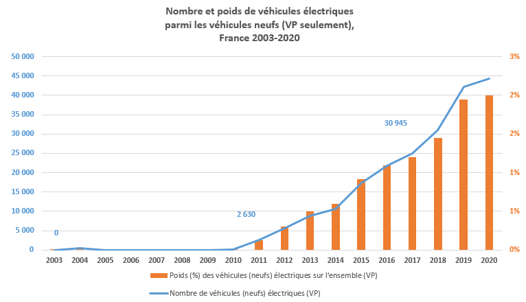
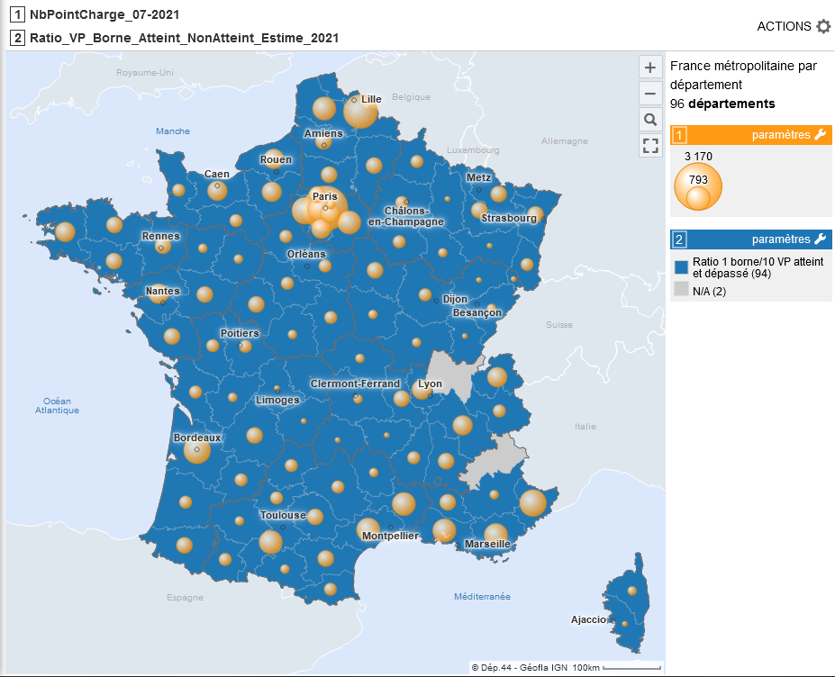
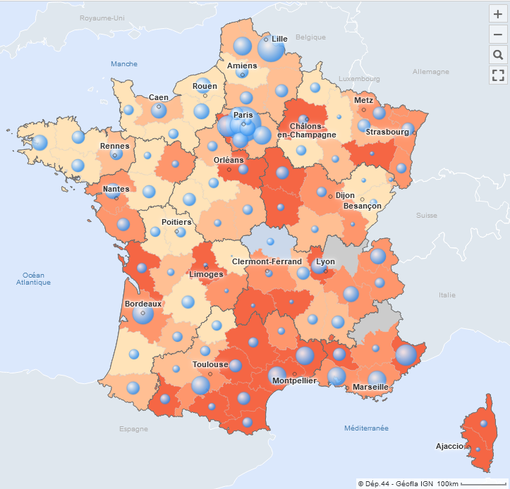
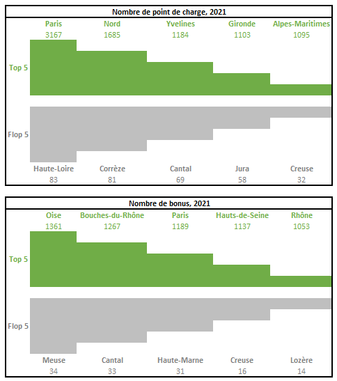
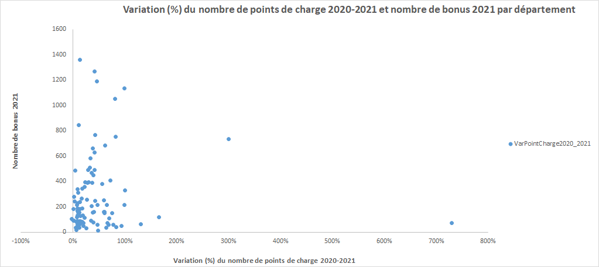
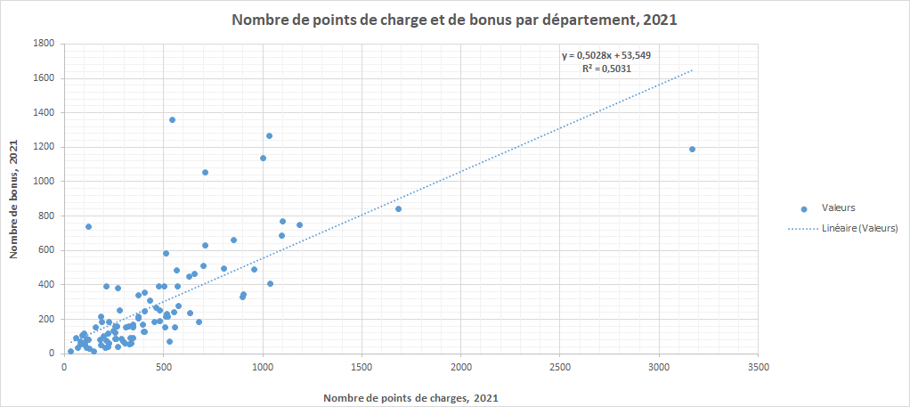

Chapitre 3 Verdir le parc automobile
3.0.1 Les véhicules électriques : quelques repères

- En 2020, les véhicules de type électriques/éthydrogènes et hybrides rechargeables représentent 1 % de l’ensemble du parc de véhicules particuliers (VP) en 2020. En 2020, cette proportion est de 10 % pour les véhicules neufs (nouvelles immatriculation) contre 1 % pour les véhicules d’occasion.
- Les véhicules particulier représentent plus de 90 % des voitures (7 % pour les flottes professionnelles). Par ailleurs, l’âge moyen du parc automobile français (1à ans en 2020 et estimé à 11 ans en 2021) continue d’augmenter malgré les différentes aides mises en place.
- Depuis 2019, plus d’une voiture sur deux est éligible à la vignette Crit’air 1 ou 2.
En 2021, ce sont en moyenne 293 bonus qui ont été distribués dans les départements français.
Ce volume varie fortement d’une année à l’autre. A titre de comparaison cette moyenne était de 500 en 2020. Pour l’année 2021, le nombre de bonus varie de 14 (Lozère) à 1 361 (Oise). Le ratio entre les bonus distribués (flux) et le nombre de bornes existantes (stock) reste inférieur à 10 bonus pour 1 borne.
3.0.1.1 Carte 1 : Ratio du nombre de bonus sur le nombre de points de recharge ouverts au public en 2021

En 2021, comme en 2020, l’intégralité des départements français respectent le ratio 1 borne / 10 véhicules rechargeables
3.0.1.2 Carte 2 : dans quels territoires le ratio 1 borne pour 10 véhicules est-il atteint ou dépassé ?

3.0.1.3 Carte 3 : nombre de point de charge 2021 et variation entre 2020 et 2021
 Légende :
Lecture légende : les cercles représentent le nombre de point de charge en 2021 et l’aplat de couleur doit-être lu comme la variation (en %) du nombre de ces points de charge entre 2020 et 2021. Ainsi, la variation du nombre de point de charge oscille de - 2 % à + 730 %.
3.0.1.4 Les Top & Flop 5 : exploration des liens entre le nombre de bonus et de bornes
- Top & Flop 5 
- Nombre de bonus et nombre de bornes : des variations coordonnées ?
Il ne semble pas y avoir de lien entre les variations observées entre le nombre de bonus distribuées et le nombre de bornes de recharge existantes. Ces tendances ne semblent pas liées/synchronisées.

